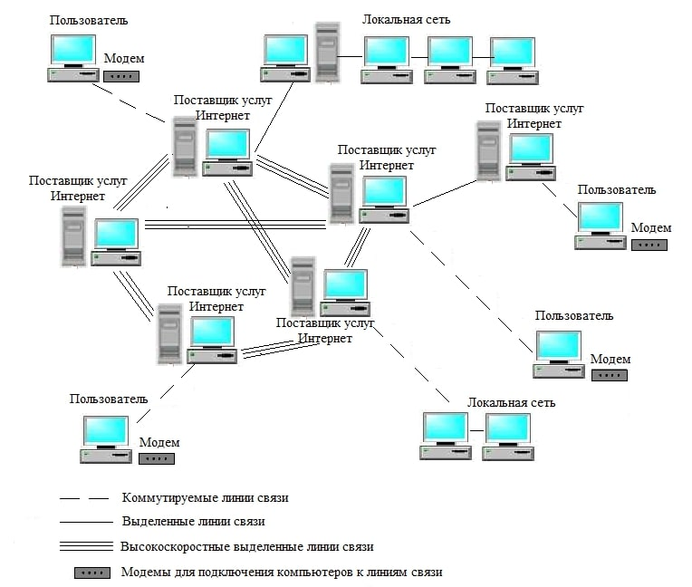

Структура Интернета
Интернет - это межсетевая среда с единым адресным пространством, действующая на базе стека протоколов TCP/IP.
Провайдер - это организация, предоставляющая платные услуги связи

Структура глобальной сети (Интернета)
Протокол IP
Базовым протоколом, обеспечивающим передачу данных между сетями, для среды Интернет является протокол IP.
Протокол IPv4 предусматривает систему адресации, обеспечивающую точную идентификацию каждого узла сети путем присвоения ему числового адреса в формате: XXX.XXX.XXX.XXX, где XXX - десятичное число в диапазоне от 0 до 255 (1 Байт).
Общая длина адреса составляет 4 Байта.
Теоретическое количество уникальных IP-адресов составляет: 232 (4 294 967 296). С каждым днем их количество уменьшается в связи с увеличением пользователей интернета.
В связи с этим был разработан протокол IPv6, в котором произошли значительные изменения, которые отражены в таблице.
Сравнительная таблица IPv4 и IPv6
| Характеристика |
IPv4 |
IPv6 |
| Вид IP-адреса |
212.192.34.5 |
2001:0db8:11a3:09d7:1f34:8a2e:07a0:765d |
| Количество уникальных IP |
232 (4 294 967 296) |
5*1028 |
| Байт на один IP |
4 |
16 |
Система IP-адресации учитывает структуру Интернета, поэтому адрес состоит из номера сети и номера компьютера в данной сети.
В зависимости от возможного количества компьютеров в сети, адреса разделяются на три класса: A,B,C (классы коммерческой адресации)
Классы адресации
| Класс |
Первые биты |
Номер сети (бит) |
Диапазон сетей |
Максимальное число сетей |
Максимальное число узлов в сети |
| A |
0 |
8 |
1.0.0.0 - 126.0.0.0 |
126 |
16 777 214 |
| B |
10 |
16 |
128.0.0.0 - 191.255.0.0 |
16 382 |
65 534 |
| C |
110 |
24 |
192.0.0.0 - 223.255.255.0 |
2 097 150 |
254 |
Сетевая модель DoD
- 4-й уровень (нижний) - протоколы уровня сетевого доступа (обеспечивают физическую доставку данных к сетевым устройствам).
- 3-й уровень - уровень межсетевого взаимодействия. Обеспечивает возможность перемещения пакетов между сетями. Основной протокол этого уровня - IP.
- 2-й уровень - транспортный уровень. Основные протоколы уровня - TCP и UDP.
- 1-й уровень - прикладной. Протоколы этого уровня стандартизируют представление данных, обрабатывают данные пользователей.
Основные протоколы прикладного уровня
- HTTP(S) - протокол передачи гипертекста. Используется службой WWW.
- (S)FTP - протокол передачи данных, используемый для пересылки файлов. Протокол удобен для передачи файлов, т.к. он может продолжать дозагрузку файлов после разрыва связи между компьютерами.
- SMTP - почтовый протокол, служащий для отправки сообщения с компьютера-клиента на почтовый сервер для пересылки почты между серверами.
- POP3 - почтовый протокол для получения доступа к почтовому ящику на сервере и пересылки сообщений на компьютер-клиент.
- IMAP - альтернативный почтовый протокол для доставки почты на локальный компьютер пользователю. Его основное отличие от
POP3 состоит в том, что он не требует хранения всех писем на локальном компьютере пользователя, а также позволяет выполнять
ряд дополнительных действий: удаление почтовых ящиков, поиск сообщений, выборочная доставка почты и др.
- SSH - протокол, позволяющий производить удаленное управление компьютеров и передачу файлов.